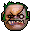

Lore
Pudge 
На полях Вечной бойни, далеко на юге от Квойджа, тучная фигура упорно трудится под покровом ночи — убирает, а затем расчленяет, потрошит, сгружает в кучи конечности и внутренние органы павших. И все это лишь для того, чтобы на следующее утро бойня могла повториться. В том проклятом мире ничто не разлагается само по себе — мертвецам никогда не суждено вернуться обратно в землю, и не важно, насколько глубока могила. Окруженный стаями птиц-падальщиков, которым нужны порезанные кусочки трупов, мясник Pudge упражняется с лезвиями, которые затачиваются от резки трупов. Вжик-вжик-тух. Плоть отсекается от костей, связки и сухожилия отрываются как кусочки мокрой бумаги. И хоть у Pudge всегда было пристрастие к мясницкому ремеслу, со временем тучный здоровяк полюбил и то, что получается, когда он заканчивает работу над трупом. Сначала кусочек мускула там, глоточек крови... Вскоре Pudge уже вгрызался в тела самых крепких существ подобно грызущей кость собаке. Даже те, кто не питает страха перед жнецом Смерти, предпочитают не связываться с мясником.
This drives us
Pudge — это герой с ближним типом атаки, основным атрибутом которого является Strength attribute (сила). Его первая способность, Meat Hook, бросает окровавленный крюк в определенную область или юнита. Крюк зацепится за первого юнита, в которого попадет, притащит его к Pudge и нанесет урон, если это враг. Вторая способность, Rot, токсичное облако, вызванное из-за гноения, постоянно наносит урон и замедляет противников, ранит не только вражеских юнитов, но и самого Pudge. Пассивная способность, Flesh Heap, дает Pudge дополнительное сопротивление магии, а также дополнительную силу, которая увеличивается, когда Pudge убивает вражеского героя, или тот умирает поблизости. Способность начинает накапливать заряды уже до того, как будет выучена, но получить силу герой сможет, только изучив ее. Ультимативной способностью, Dismember, Pudge начинает заживо пожирать вражеского юнита, обездвиживая его и нанося периодический урон. Покупка Aghanim's Shard icon.png Aghanim's Shard позволяет использовать Dismember на союзника, тем самым проглотив его, сделав неуязвимым и восстанавливая 4 % от максимального здоровья в секунду, союзник может в любой момент вылезти из владельца способности.
Hook

Бросает окровавленный крюк в указанную цель или в выбранном направлении. Крюк зацепится за первое существо, в которое попадёт, притащит его к герою и нанесёт урон, если целью оказался враг.
Rot

Ядовитое облако, которое замедляет врагов и наносит значительный урон как им, так и владельцу способности.
Flesh Heap

Увеличивает сопротивление магии, а также даёт дополнительную силу за каждого убитого или погибшего поблизости вражеского героя. Заряды накапливаются с начала игры, но герой получит силу только после изучения способности.
Eject

Извергнуть проглоченного героя.
Rot

Герой заживо пожирает врага, оглушая его и нанося периодический урон, который зависит от силы владельца способности и излечивает его. На крипов действует дольше.